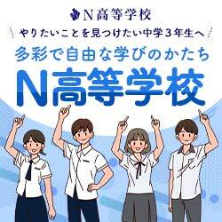
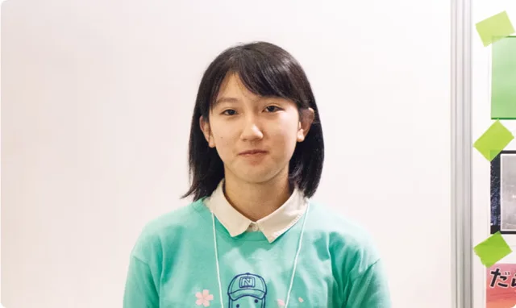

PR本ページはN高グループの資料請求の広告を含みます。内容は2026年9月27日時点で確認した公的資料・N高グループの公式情報をもとにしています。
中3向け｜スクーリングとは｜2026年9月版
スクーリングとは？
学校に行って、先生から直接受ける授業のことです。
 スクーリングは学校で
スクーリングは学校で
家で学ぶ時間が多い高校でも、スクーリングは卒業に必要です。何をするのか、何日くらい行くのか、学校を選ぶときに何を確認すればいいのかを整理しました。
スクーリングとは｜先に答えると
【答え】
スクーリング（面接指導）とは、通信制の高校で、先生や他の生徒と一緒に対面で学ぶ授業のことです。
レポート・試験と並んで、単位をとるために欠かせません。家中心で学ぶコースでも、スクーリングはあります。
出典：文部科学省「通信制高校とは？」（通信制高等学校情報発信サイト）
スクーリングを、もう少し詳しく
単位は、3つの学習でとる
通信制の高校では、次の3つを組み合わせて学びます。テレビやインターネットの動画で学ぶこともあります。
- レポート（添削指導） (決められた回数のレポートに取り組む)
- スクーリング（面接指導） (先生や他の生徒と対面で学ぶ)
- 試験 (レポートやスクーリングで学んだことを試験で確認)
こうして単位を積み重ね、74単位以上をとると卒業できます。
何日くらい行く？
日数は、学校・コース・その年にとる単位の数で変わります。年に数日〜十数日の学校もあれば、決まった曜日に本校へ通うコースで、その登校がスクーリングになる学校もあります。
どこで受ける？
学校の本校で受ける、住んでいる地域の会場やキャンパスで受けるなど、学校で違います。本校が遠い場合は、泊まりがけになることもあります。
スクーリングは「あるかないか」ではなく、日数と場所で比べるもの。
出典：文部科学省「通信制高校とは？」「高等学校通信教育の質の確保・向上のためのガイドライン」
学校を選ぶときに確認したいこと
「スクーリングが少ない学校がいい」と思ったら、日数だけでなく、次の点もあわせて確認しておくと安心です。
- 年に何日か 学年ごとに日数が違う学校もある
- どこで受けるか 本校か、家の近くの会場か
- 泊まりがあるか 何泊何日か、在学中に何回あるか
- 費用はどうなるか 交通費・宿泊費が学費と別にかかる場合がある
- ふだんの通い方とどう関わるか 通学コースの登校とは別に必要か
このあたりは、学校の資料や説明会で具体的に書かれています。気になる学校があれば、資料で並べて確認するのが確実です。
N高グループの場合、スクーリングはこうなっています
たとえばN高グループでは、どのコースでも毎年スクーリングがあります。ネットコースでも、年に数日は先生や同級生と直接会う日があるということです。
| 1年次 | 年7〜8日（全国の拠点でのスクーリングとテスト） |
|---|---|
| 2年次 | 年8〜10日（本校4〜5日＋全国の拠点4〜5日） |
| 3年次 | 年7〜8日（全国の拠点でのスクーリングとテスト） |
| 本校スクーリング | 沖縄伊計本校で標準4泊5日。原則2年次に、在学中1回以上 |
| 費用 | 会場までの交通費と、必要に応じた宿泊費は別 |
※標準的に履修した場合の目安（テストを含む）。履修の状況や転入・編入で変わります。

出典：N高グループ公式「スクーリングについて」「よくある質問」（2026年9月27日確認）
N高グループって、どんな高校？
N高グループ（N高・S高・R高）

ネット中心から週5まで、学び方の幅が広い。
N高グループ（N高・S高・R高）は、家で学ぶネットコースから、週5日キャンパスに通うコースまでを用意しています。入学後に通い方を見直せる時期も、公式FAQで具体的に案内されています。
- ネット中心・週1＋・週3・週5から学び方を選べる（通学系はリアルかオンラインのキャンパス）
- 入学後の変更時期を公式FAQで公開（ネット→通学系は3カ月ごと、通学系→ネットは6カ月ごと）
- どのコースでも複数のメンターがつき、個人面談・三者面談がある
- リアルキャンパスは105カ所・42都道府県（2026年9月時点）
基本情報
| 学び方 | ネットコース／通学系（週1＋・週3・週5）。通学系はリアルかオンラインのキャンパスを選ぶ |
|---|---|
| 通うペース | ネットは日々の通学なし。週1＋は週1日（リアルなら平日の放課後も通える）、週3・週5 |
| 学費 | 初年度の実質負担モデル 年7.3万円（ネット）〜102.8万円（週5・リアル） ※就学支援金の適用を受けた場合（2027年度新入学のモデル） |
| スクーリング | どのコースでも毎年。年7〜10日程度（2年次に沖縄伊計本校で4泊5日が標準） |
| 相談・サポート | 複数のメンター、個人面談・保護者も入る三者面談 |
出典：N高グループ公式サイト（コース・よくある質問・スクーリング）、「2027年度 生徒募集要項」
コースごとの学び方


※コースは「ネット」「週1＋」「週5・週3」の3つです。図：N高グループ公式サイトのコース紹介より
入学後に通い方を見直せる
「まずは家中心で始めて、慣れたら通う日を増やす」「やっぱり家中心に戻す」といった見直しが、決められた時期にできます。
| ネット → 通学系 | 3カ月ごと |
|---|---|
| 通学系 → ネット | 6カ月ごと |
| 通学日数の変更（例：週1＋→週3） | 3カ月ごと |
いつでも好きなときに変えられる、ではありません。通学系コースは定員や選考などの条件があり、学費も変わります。出典：N高グループ公式「よくある質問」
相談できる人
どのコースでも複数のメンターがつき、学習の進み具合の確認・個人面談・保護者も入る三者面談があります。面談の回数などは、資料や説明会で確認できます。
生徒の声
ネットコース／2年次（インタビュー当時）
自分の活動に取り組む時間がある
自分の時間を持てる高校を探し、プログラミングや課外授業に惹かれて入学。将来は食品ロスを減らす活動がしたいので、在学中から取り組みたいそうです。
出典：N高グループ公式ページ「生徒の声」（当サイトが要約）。個人の感想です。
N高グループで学ぶ生徒の声
N高グループ公式ページに載っている生徒の声を、短くまとめて紹介します。

リアルキャンパス／2年次（インタビュー当時）
多彩な課外授業や部活動が決め手
プロジェクトNで日本の古典作品をリメイクする企画に参加し、キャンパス代表に。全国のキャンパスに向けて発表したことが良い経験になったそうです。
出典：N高グループ公式ページ
ネットコース／卒業生
大学進学のサポートの手厚さが決め手
課外授業の「大学受験対策」講座や、大学進学のためのコーチングを活用。自分に合ったスケジュールを一から組み立てることで、ゴールに向けた道筋を描く力が身に付いたそうです。
出典：N高グループ公式ページ
N高グループ公式ページ「生徒の声」（nnn.ed.jp、2026年9月27日確認）。本文は当サイトが要約したもので、写真も同ページの掲載画像です。※個人の感想です。学年はインタビュー当時のものです。
迷っているなら、資料で比べてから決めればOK
入学を決めるためではなく、比べるための資料です。
▶学費・コースを資料で確認する└N高グループの資料請求ページへ進みます
出典・注記
- 文部科学省「通信制高校とは？」（通信制高等学校情報発信サイト）、「高等学校通信教育の質の確保・向上のためのガイドライン」
- N高グループ公式サイト（スクーリングについて・コース各ページ・よくある質問・必修授業・入学案内・生徒の声、2026年9月27日確認）、公式発表（2026年9月7日：キャンパス数）、「2027年度 生徒募集要項」
- N高グループの画像は、N高グループ公式サイトの素材と公式バナーです。